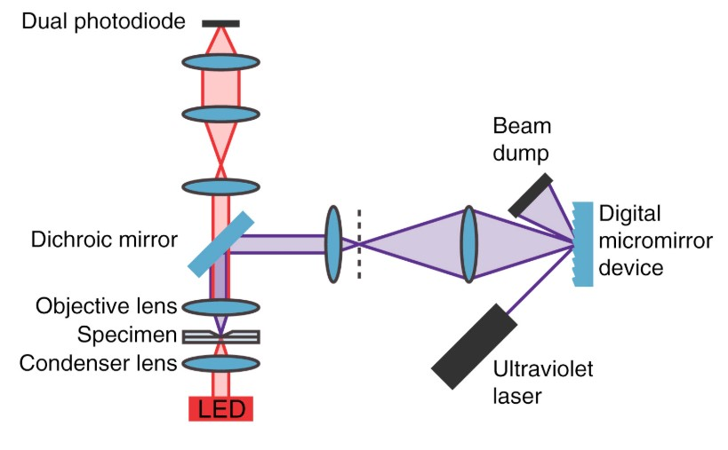
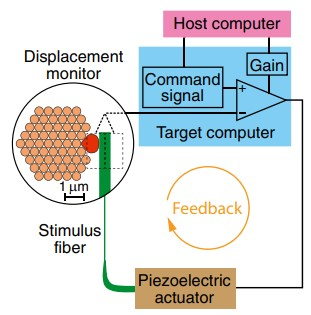

Scientific instrumentation
Scientific research evolves in response to new evidence and new personnel. As one researcher finishes their projects, new researchers join the lab with different skills and research questions.The scientific instrumentation in the lab must therefore adapt to the changing environment. As a research specialist in Jim Hudspeth’s Laboratory of Sensory Neuroscience, I ensure that those adaptations occur.
After a new research question is posed, I collaborated and worked with Dr. Hudspeth and the researchers to first define what tools are needed to answer their question. As demonstrated in the timeline below, I then used my experience in hardware, software, and fabrication and my meticulousness to create custom instrumentation.
Cochlear response system
Developed the apparatus to preserve the physiological conditions of an excised cochlea, deliver sound stimuli to the preparation, and measure the corresponding electrical and mechanical responses using an amplifier and optical coherence tomography (OCT), respectively. This system was used to reveal that a unified biophysical principle underlies hearing across species.

Schematic wiring diagram of the cochelar response system
Photonic stimulation
Helped develop a new method for moving hair bundles with photonic pressure that overcame frequency limits of traditional methods.
Multi-purpose stimulus and response system
This system–capable of mechanical and infrared stimulation, patterned illumination with ultraviolet light, photometric recording, and electrophysiology–was used to identify an unexpected mechanism of hair-cell stimulation.
Schematic diagram of the patterned illumination system
Hearing diagnostics suite
Developed a test system to assess auditory function by eliciting and measuring auditory brainstem responses (ABRs) and otoacoustic emissions (OAEs). Used by researchers from five separate groups: the Hudspeth, Rajasethupathy, Pitt, Cederroth, and Darnell laboratories.
Two-photon laser scanning microscope
Modified an Olympus upright microscope and integrated a custom-built nonlinear fluorescent imaging system.
Mechanical-load clamp
This instrument solved a differential equation describing the motion of a hair bundle in order to apply a specified elastic load and force using a piezoelectric actuator. It was ultimately used to show that the nonlinear mechanical properties of hair bundles dictate their sensory behaviors, enabling them to operate as an oscillator, a resonant circuit, a low-pass filter, or a step detector.
Schematic diagram of the mechanical load clamp
Fish behavioral test system
Created a behavioral arena used to characterize how a surface-feeding fish spatially perceives stimuli with its sensory receptors.